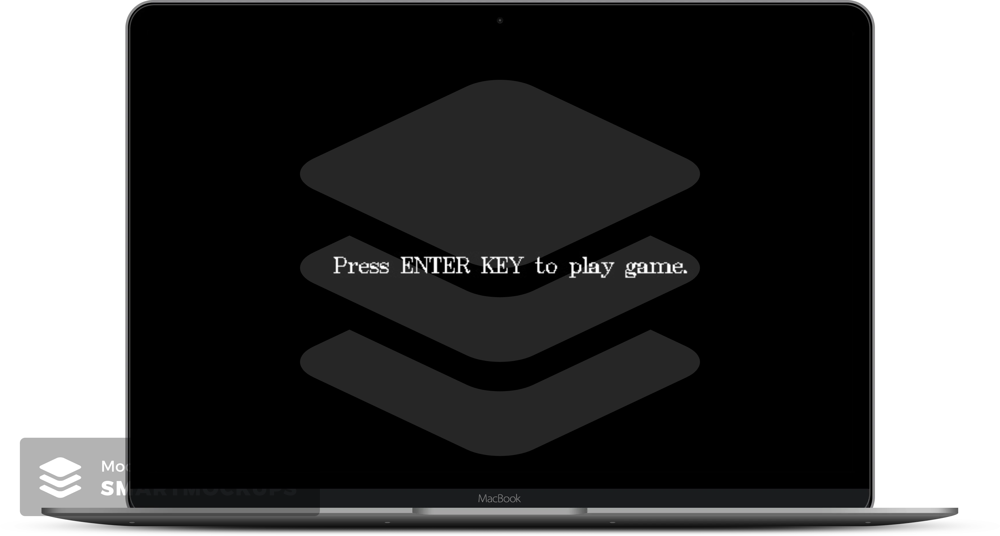
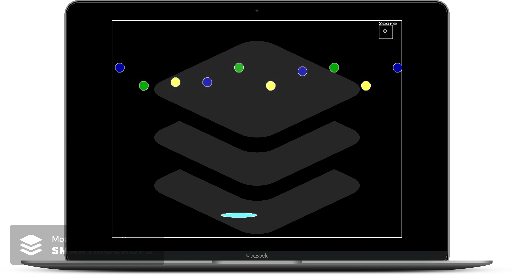

<div id="ajax-page" class="ajax-page-content">
  <div class="ajax-page-wrapper">
    <div class="ajax-page-nav">
      <div class="nav-item ajax-page-prev-next">
        <a class="ajax-page-load" href="portfolio-5.html"
          ><i class="lnr lnr-chevron-left"></i
        ></a>
        <a class="ajax-page-load" href="portfolio-1.html"
          ><i class="lnr lnr-chevron-right"></i
        ></a>
      </div>
      <div class="nav-item ajax-page-close-button">
        <a id="ajax-page-close-button" href="#"
          ><i class="lnr lnr-cross"></i
        ></a>
      </div>
    </div>

    <div class="ajax-page-title">
      <h1>Game in C Language</h1>
    </div>

    <div class="row">
      <div class="col-sm-4 col-md-4 portfolio-block">
        <a
          href="https://github.com/PrekshaPatel1805/Game_C_Language"
          target="_blank"
          ></a>
      </div>

      <div class="col-sm-4 col-md-4 portfolio-block">
        <a
          href="https://github.com/PrekshaPatel1805/Game_C_Language"
          target="_blank"
          ></a>
      </div>

      <div class="col-sm-4 col-md-4 portfolio-block">
        <!-- Project Description -->
        <div class="project-description">
          <div class="block-title">
            <h3>Description</h3>
          </div>
          <ul class="project-general-info">
            <li>
              <p><i class="fa fa-user"></i> Preksha Patel</p>
            </li>
            <li>
              <p>
                <i class="fa fa-globe"></i>
                <a
                  href="https://github.com/PrekshaPatel1805/Game_C_Language"
                  target="_blank"
                  >Game_C_Language</a
                >
              </p>
            </li>
            <li>
              <p><i class="fa fa-calendar">August 2014- September 2014</i></p>
            </li>
          </ul>

          <p class="text-justify">
            The balloons are randomly falling where the user must save it not
            touching the ground with a small line of the palate • Point counted
            for the balloons saving from fallen
          </p>
          <!-- /Project Description -->

          <!-- Technology -->
          <div class="tags-block">
            <div class="block-title">
              <h3>Technologies</h3>
            </div>
            <ul class="tags">
              <li><a> C Programming Language with Graphics</a></li>
            </ul>
          </div>
          <!-- /Technology -->
        </div>
        <!-- Project Description -->
      </div>
    </div>
  </div>
</div>
